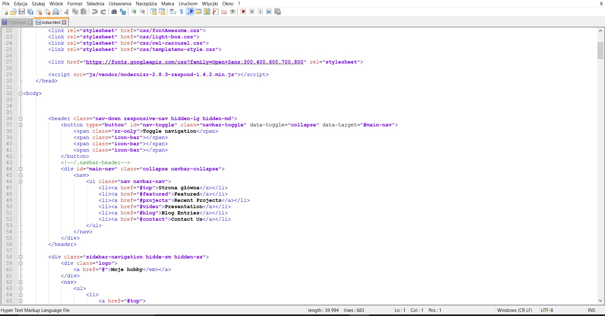
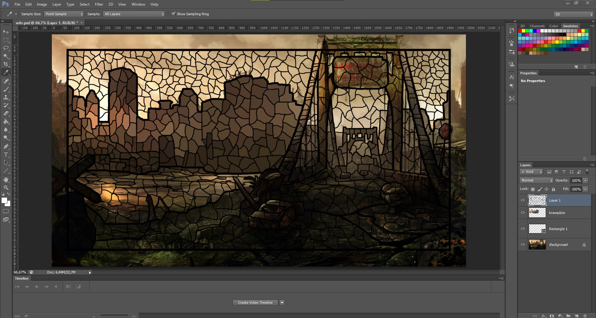
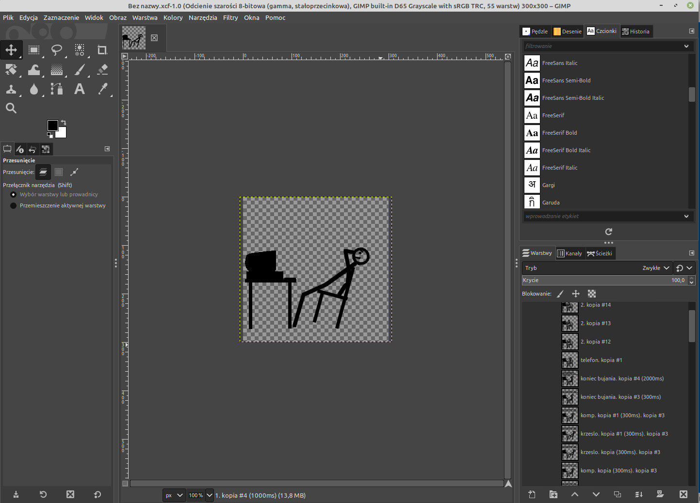
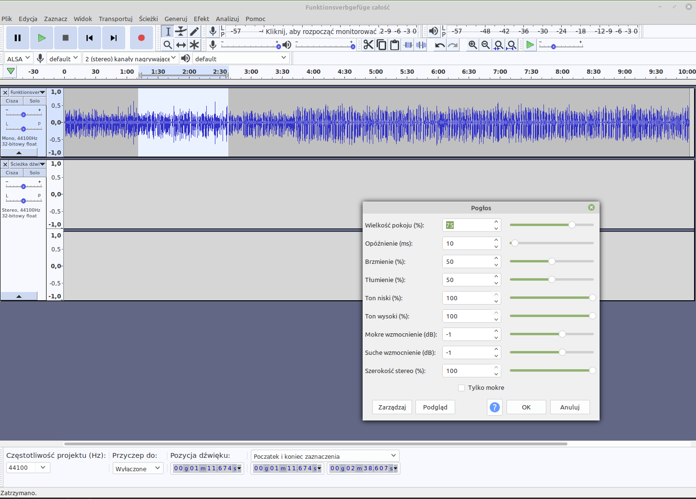

Program którego będziesz używać na lekcjach to przede wszystkim Notepad++.
Jest to wielofunkcyjny program pozwalający programować nie tylko w języku html, ale również
wielu innych m.in. C++, JAVA czy SQL.

Użyjesz go do stworzenia wszelkiego rodzaju stron internetowych.
Programem, który będziesz otwierał najczęściej podczas lekcji dotyczących grafiki, będzie Adobe Photoshop.

Nauczysz się jednak korzystać z kilku innych m.in. Gimp, czy Inkscape.

Poznasz również sposoby na obróbkę dźwięku.
